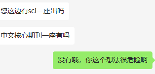
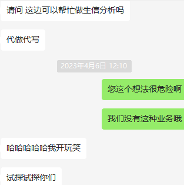
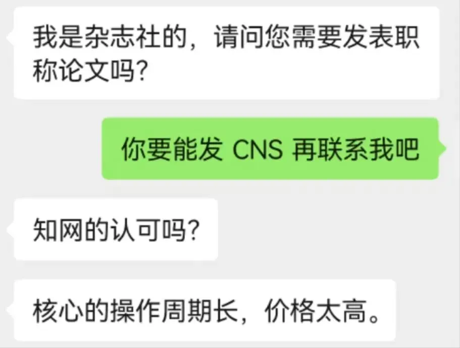
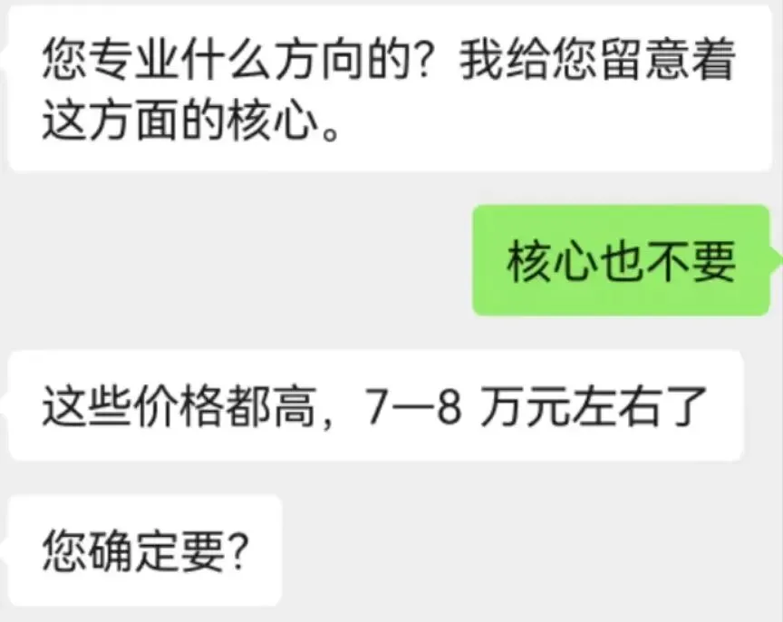
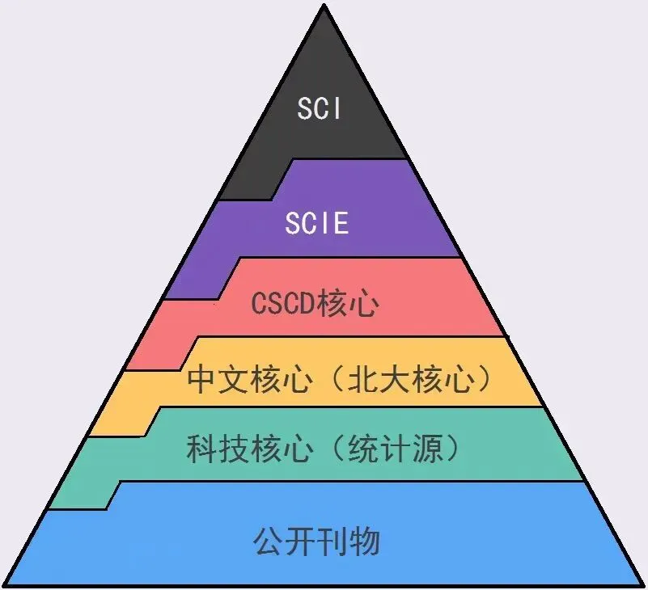

这个想法很危险啊
原文：https://mp.weixin.qq.com/s?__biz=MzAwMzIzOTk5OQ==&mid=2247499508&idx=1&sn=9e619dd776be0e5c733f78a3ff8b3000&chksm=9b3c87a4ac4b0eb275022e282c258d704694208238e026e662646636d5f29c39cd362f9af770#rd 合集：漫谈胡侃
最近遇到一些奇怪的人。一方面，出现了一些奇怪的甲方：


另一方面，出现了一些奇怪的乙方：

不由得感慨，这个世界，循规蹈矩的人最难生存。我们辛辛苦苦做科研、在公众号里码教程，走捷径的人却一大堆。买一篇中文核心居然要七八万￥，而且还真的有人买，难道中文核心不是科技圈的最底层吗。。。买卖论文还找我门上来了，那不等于在城管门口摆摊麽。别让我捉住，看见一个举报一个。